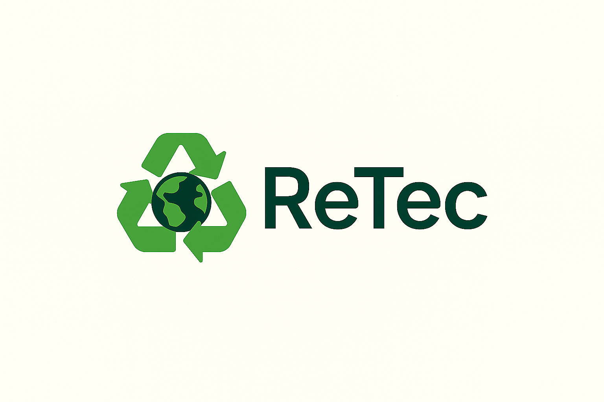

ABREE
Associação Brasileira de Reciclagem de Eletroeletrônicos e Eletrodomésticos. Disponibiliza uma ferramenta para localizar pontos de recebimento de produtos eletrônicos.
Acessar site oficial →
O descarte correto de resíduos eletrônicos é uma responsabilidade compartilhada entre a população, as empresas e as instituições comprometidas com a preservação ambiental. Para garantir que esses materiais recebam a destinação adequada, existem organizações que trabalham com sistemas de coleta e logística reversa, facilitando o encaminhamento de equipamentos que não possuem mais utilidade.
No Brasil, algumas iniciativas contribuem para tornar esse processo mais acessível à população. Entre elas, pode-se citar a ABREE (Associação Brasileira de Reciclagem de Eletroeletrônicos e Eletrodomésticos) e a Green Eletron, organizações que atuam na gestão da logística reversa e na destinação ambientalmente adequada de resíduos eletroeletrônicos.
A ABREE disponibiliza uma ferramenta de consulta que permite localizar pontos de recebimento por meio do CEP e do tipo de produto que deseja descartar. Já a Green Eletron mantém iniciativas de coleta de eletroeletrônicos, pilhas e baterias, além de disponibilizar informações para encontrar locais de descarte.
Conhecer essas alternativas é um passo importante para transformar a conscientização em atitudes concretas. Ao encaminhar seus equipamentos para pontos de recebimento adequados, você contribui para evitar a contaminação do solo e da água, possibilita o reaproveitamento de materiais e fortalece práticas sustentáveis.
Confira as organizações abaixo e encontre alternativas para realizar o descarte correto dos seus equipamentos eletrônicos.
Associação Brasileira de Reciclagem de Eletroeletrônicos e Eletrodomésticos. Disponibiliza uma ferramenta para localizar pontos de recebimento de produtos eletrônicos.
Acessar site oficial →Organização que promove a logística reversa de produtos eletroeletrônicos, pilhas e baterias, contribuindo para a destinação ambientalmente adequada desses resíduos.
Conhecer a organização →Lembre-se: antes de descartar um equipamento, procure informações sobre os materiais aceitos e os pontos de recebimento disponíveis em sua região. Pequenas atitudes individuais, quando realizadas coletivamente, fazem a diferença na construção de um futuro mais sustentável.
Tire suas dúvidas e saiba mais sobre o descarte correto de resíduos eletrônicos.
É todo equipamento elétrico ou eletrônico descartado, como celulares, computadores, televisores, pilhas e baterias.
Esses equipamentos podem conter substâncias prejudiciais ao meio ambiente e à saúde. Além disso, muitos materiais podem ser recuperados e reciclados.
Você pode consultar os pontos de recebimento disponíveis na sua região por meio de iniciativas como ABREE e Green Eletron.
Sim! Celulares, computadores e outros equipamentos podem ser encaminhados a pontos de coleta que aceitem esses materiais.
Os resíduos são encaminhados para processos adequados de triagem, desmontagem, reaproveitamento e reciclagem, conforme o tipo de material.